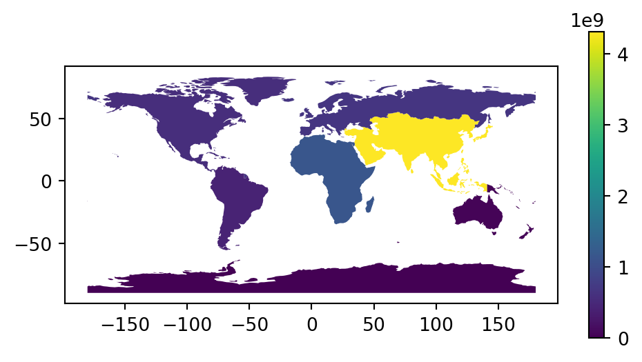
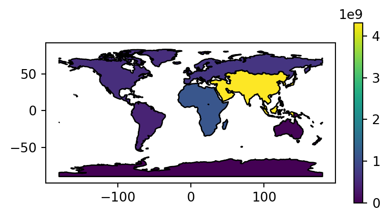
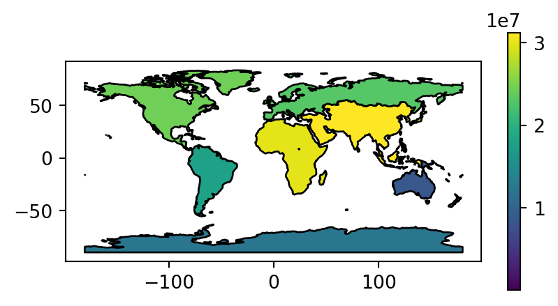
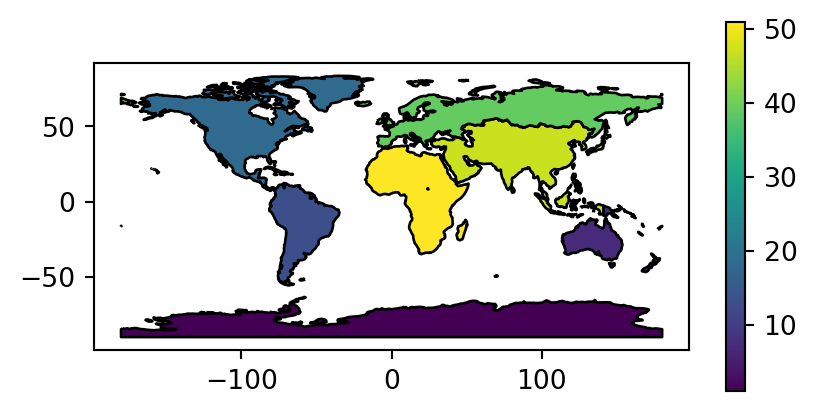
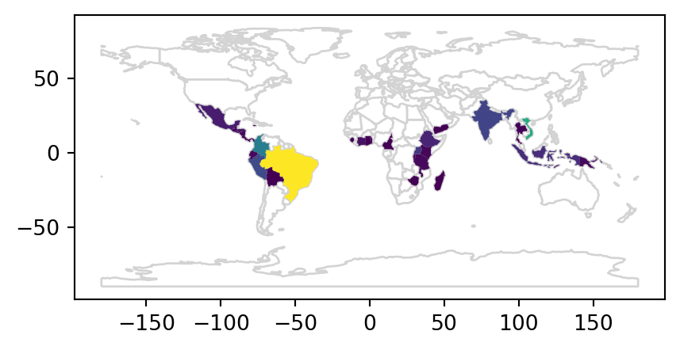
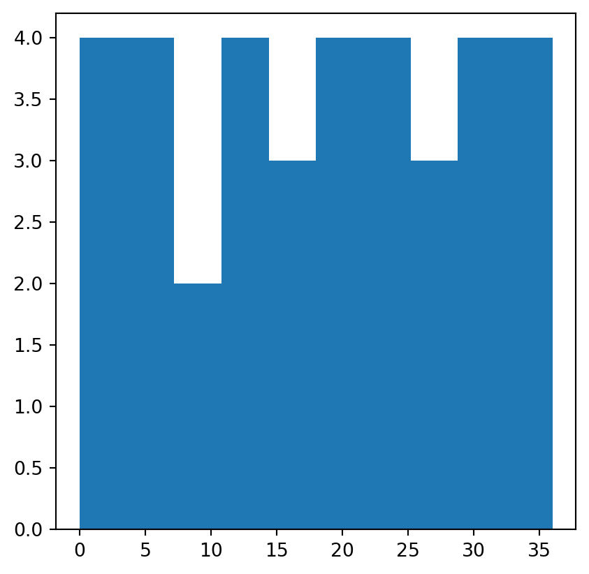
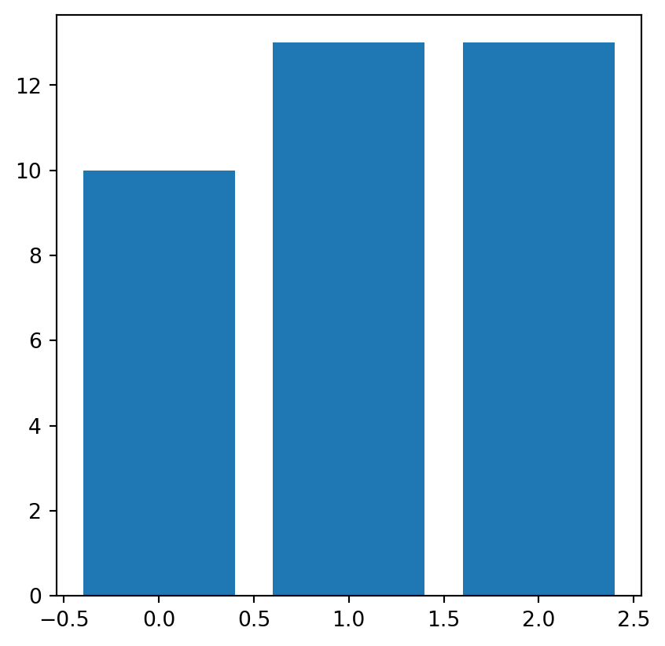

import numpy as np
import matplotlib.pyplot as plt
import pandas as pd
import geopandas as gpd
import rasterio2 Attribute data operations
Prerequisites
This chapter requires importing the following packages:
It also relies on the following data files:
world = gpd.read_file('data/world.gpkg')
src_elev = rasterio.open('output/elev.tif')
src_grain = rasterio.open('output/grain.tif')
src_multi_rast = rasterio.open('data/landsat.tif')2.1 Introduction
Attribute data is non-spatial information associated with geographic (geometry) data. A bus stop provides a simple example: its position would typically be represented by latitude and longitude coordinates (geometry data), in addition to its name. The Elephant & Castle / New Kent Road bus stop in London, for example has coordinates of -0.098 degrees longitude and 51.495 degrees latitude which can be represented as POINT (-0.098 51.495) using the Simple Feature representation described in Chapter 1. Attributes, such as the name of the bus stop, are the topic of this chapter.
Another example of an attribute is the elevation value for a specific grid cell in raster data. Unlike the vector data model, the raster data model stores the coordinate of the grid cell indirectly, meaning the distinction between attribute and spatial information is less clear. Think of a pixel in the 3rd row and the 4th column of a raster matrix: its spatial location is defined by its index in the matrix. In this case, we need to move four cells in the x direction (typically east/right on maps) and three cells in the y direction (typically south/down) from the origin. The raster’s resolution is also important as it defines the distance for each x- and y-step. The resolution and the origin are stored in the raster’s header, which is a vital component of raster datasets which specifies how pixels relate to geographic coordinates (see also Chapter 3).
This chapter teaches how to manipulate geographic objects based on attributes such as the names of bus stops in a vector dataset and elevations of pixels in a raster dataset. For vector data, this means techniques such as subsetting and aggregation (see Section 2.2.1 and Section 2.2.2). Moreover, Section 2.2.3 and Section 2.2.4 demonstrate how to join data onto simple feature objects using a shared ID and how to create new variables, respectively. Each of these operations has a spatial equivalent: [ operator for subsetting a (Geo)DataFrame using a boolean Series, for example, is applicable both for subsetting objects based on their attribute and spatial relations derived using methods such as .intersects; you can also join attributes in two geographic datasets using spatial joins. This is good news: skills developed in this chapter are cross-transferable. Chapter 3 extends the methods presented here to the spatial world.
After a deep dive into various types of vector attribute operations in the next section, raster attribute data operations are covered in Section 2.3.1, which demonstrates extracting cell values from one or more layer (raster subsetting). Section 2.3.2 provides an overview of ‘global’ raster operations which can be used to summarize entire raster datasets.
2.2 Vector attribute manipulation
As mentioned in Section 1.2.2, vector layers (GeoDataFrame, from package geopandas) are basically extended tables (DataFrame from package pandas), the difference being that a vector layer has a geometry column. Therefore, all ordinary table-related operations from package pandas are supported for geopandas vector layers as well, as shown below.
2.2.1 Vector attribute subsetting
pandas supports several subsetting interfaces, though the most recommended ones are .loc, which uses pandas indices, and .iloc, which uses (implicit) numpy-style numeric indices.
In both cases, the method is followed by square brackets, and two indices, separated by a comma. Each index can be:
- A specific value, as in
1 - A
list, as in[0,2,4] - A slice, as in
0:3 :—indicating “all” indices, as in[:]
An exception to this rule is selecting columns using a list, which we do using shorter notation, as in df[['a','b']], instead of df.loc[:, ['a','b']], to select columns 'a' and 'b' from df.
Here are few examples of subsetting the GeoDataFrame of world countries (Figure 1.2). First, we are subsetting rows by position. This can be done using the three following approaches, which all return the same result. In the expression #1, we are using the expressive notation [0:3,:], meaning “rows 1,2,3, all columns”. Keep in mind that indices in Python start from 0, and slices are inclusive of the start and exclusive of the end.; therefore, 0:3 means indices 0, 1, 2, i.e., first three rows in this example. In expression #2, we omit the columns index, as well as the starting index, that is, [:3], doing the same with less code. In expression #3, we are using the .head method to select the first N rows.
world.iloc[0:3, :] # approach #1
world.iloc[:3] # approach #2
world.head(3) # approach #3| iso_a2 | name_long | ... | gdpPercap | geometry | |
|---|---|---|---|---|---|
| 0 | FJ | Fiji | ... | 8222.253784 | MULTIPOLY... |
| 1 | TZ | Tanzania | ... | 2402.099404 | MULTIPOLY... |
| 2 | EH | Western S... | ... | NaN | MULTIPOLY... |
3 rows × 11 columns
Subsetting columns by position requires specifying that we want to keep all of the rows (:) and then the indexes of the columns we want to keep.
world.iloc[:, 0:3]| iso_a2 | name_long | continent | |
|---|---|---|---|
| 0 | FJ | Fiji | Oceania |
| 1 | TZ | Tanzania | Africa |
| 2 | EH | Western S... | Africa |
| ... | ... | ... | ... |
| 174 | XK | Kosovo | Europe |
| 175 | TT | Trinidad ... | North Ame... |
| 176 | SS | South Sudan | Africa |
177 rows × 3 columns
To subset rows and columns by position we need to specify both row and column indices, separated by a comma.
world.iloc[0:3, 0:3]| iso_a2 | name_long | continent | |
|---|---|---|---|
| 0 | FJ | Fiji | Oceania |
| 1 | TZ | Tanzania | Africa |
| 2 | EH | Western S... | Africa |
Subsetting columns by name is not done with the .iloc method, but requires specifying the column names directly in a double square bracket [[ notation.
world[['name_long', 'geometry']]| name_long | geometry | |
|---|---|---|
| 0 | Fiji | MULTIPOLY... |
| 1 | Tanzania | MULTIPOLY... |
| 2 | Western S... | MULTIPOLY... |
| ... | ... | ... |
| 174 | Kosovo | MULTIPOLY... |
| 175 | Trinidad ... | MULTIPOLY... |
| 176 | South Sudan | MULTIPOLY... |
177 rows × 2 columns
To select many successive columns, we can use the : notation, as in world.loc[:, 'name_long':'pop'], which selects all columns from name_long to pop (inclusive).
world.loc[:, 'name_long':'pop']| name_long | continent | ... | area_km2 | pop | |
|---|---|---|---|---|---|
| 0 | Fiji | Oceania | ... | 19289.970733 | 885806.0 |
| 1 | Tanzania | Africa | ... | 932745.79... | 52234869.0 |
| 2 | Western S... | Africa | ... | 96270.601041 | NaN |
| ... | ... | ... | ... | ... | ... |
| 174 | Kosovo | Europe | ... | 11230.261672 | 1821800.0 |
| 175 | Trinidad ... | North Ame... | ... | 7737.809855 | 1354493.0 |
| 176 | South Sudan | Africa | ... | 624909.09... | 11530971.0 |
177 rows × 7 columns
Removing rows or columns is done using the .drop method. We can remove specific rows by specifying their ids, e.g., dropping rows 2, 3, and 5 in the following example.
world.drop([2, 3, 5])| iso_a2 | name_long | ... | gdpPercap | geometry | |
|---|---|---|---|---|---|
| 0 | FJ | Fiji | ... | 8222.253784 | MULTIPOLY... |
| 1 | TZ | Tanzania | ... | 2402.099404 | MULTIPOLY... |
| 4 | US | United St... | ... | 51921.984639 | MULTIPOLY... |
| ... | ... | ... | ... | ... | ... |
| 174 | XK | Kosovo | ... | 8698.291559 | MULTIPOLY... |
| 175 | TT | Trinidad ... | ... | 31181.821196 | MULTIPOLY... |
| 176 | SS | South Sudan | ... | 1935.879400 | MULTIPOLY... |
174 rows × 11 columns
To remove specific columns we need to add an extra argument, axis=1 (i.e., columns).
world.drop(['name_long', 'continent'], axis=1)| iso_a2 | region_un | ... | gdpPercap | geometry | |
|---|---|---|---|---|---|
| 0 | FJ | Oceania | ... | 8222.253784 | MULTIPOLY... |
| 1 | TZ | Africa | ... | 2402.099404 | MULTIPOLY... |
| 2 | EH | Africa | ... | NaN | MULTIPOLY... |
| ... | ... | ... | ... | ... | ... |
| 174 | XK | Europe | ... | 8698.291559 | MULTIPOLY... |
| 175 | TT | Americas | ... | 31181.821196 | MULTIPOLY... |
| 176 | SS | Africa | ... | 1935.879400 | MULTIPOLY... |
177 rows × 9 columns
We can also rename columns using the .rename method, in which we pass a dictionary of the form old_name:new_name to the columns argument.
world[['name_long', 'pop']].rename(columns={'pop': 'population'})| name_long | population | |
|---|---|---|
| 0 | Fiji | 885806.0 |
| 1 | Tanzania | 52234869.0 |
| 2 | Western S... | NaN |
| ... | ... | ... |
| 174 | Kosovo | 1821800.0 |
| 175 | Trinidad ... | 1354493.0 |
| 176 | South Sudan | 11530971.0 |
177 rows × 2 columns
The standard numpy comparison operators (Table 2.1) can be used in boolean subsetting with pandas/geopandas.
True/False).
Symbol |
Name |
|---|---|
== |
Equal to |
!= |
Not equal to |
>, < |
Greater/Less than |
>=, <= |
Greater/Less than or equal |
&, |, ~ |
Logical operators: And, Or, Not |
The following example demonstrates logical vectors for subsetting by creating a new GeoDataFrame object called small_countries that contains only those countries and other teritories from the world object whose surface area is smaller than 10,000 \(km^2\). The first step is to create a logical vector (a Series object) that is True for countries with an area smaller than 10,000 \(km^2\) and False otherwise. Then, we use this vector to subset the world dataset, which returns a new GeoDataFrame object containing only the small countries.
idx_small = world['area_km2'] < 10000 ## a logical 'Series'
small_countries = world[idx_small]
small_countries| iso_a2 | name_long | ... | gdpPercap | geometry | |
|---|---|---|---|---|---|
| 45 | PR | Puerto Rico | ... | 35066.046376 | MULTIPOLY... |
| 79 | PS | Palestine | ... | 4319.528283 | MULTIPOLY... |
| 89 | VU | Vanuatu | ... | 2892.341604 | MULTIPOLY... |
| ... | ... | ... | ... | ... | ... |
| 160 | None | Northern ... | ... | NaN | MULTIPOLY... |
| 161 | CY | Cyprus | ... | 29786.365653 | MULTIPOLY... |
| 175 | TT | Trinidad ... | ... | 31181.821196 | MULTIPOLY... |
7 rows × 11 columns
A more concise command, which omits the intermediary object by combining the two steps into one, generates the same result.
small_countries = world[world['area_km2'] < 10000]
small_countries| iso_a2 | name_long | ... | gdpPercap | geometry | |
|---|---|---|---|---|---|
| 45 | PR | Puerto Rico | ... | 35066.046376 | MULTIPOLY... |
| 79 | PS | Palestine | ... | 4319.528283 | MULTIPOLY... |
| 89 | VU | Vanuatu | ... | 2892.341604 | MULTIPOLY... |
| ... | ... | ... | ... | ... | ... |
| 160 | None | Northern ... | ... | NaN | MULTIPOLY... |
| 161 | CY | Cyprus | ... | 29786.365653 | MULTIPOLY... |
| 175 | TT | Trinidad ... | ... | 31181.821196 | MULTIPOLY... |
7 rows × 11 columns
We can also combine indexes using logical operators, such as & (and), | (or), and ~ (not).
idx_small = world['area_km2'] < 10000
idx_asia = world['continent'] == 'Asia'
world.loc[idx_small & idx_asia, ['name_long', 'continent', 'area_km2']]| name_long | continent | area_km2 | |
|---|---|---|---|
| 79 | Palestine | Asia | 5037.103826 |
| 160 | Northern ... | Asia | 3786.364506 |
| 161 | Cyprus | Asia | 6207.006191 |
The various methods shown above can be chained for any combination with several subsetting steps. For example, the following code selects only countries from Asia, keeps only the name_long and continent columns, and then selects the first five rows.
world[world['continent'] == 'Asia'] \
.loc[:, ['name_long', 'continent']] \
.iloc[0:5, :]| name_long | continent | |
|---|---|---|
| 5 | Kazakhstan | Asia |
| 6 | Uzbekistan | Asia |
| 8 | Indonesia | Asia |
| 24 | Timor-Leste | Asia |
| 76 | Israel | Asia |
Logical operators &, |, and ~ (Table 2.1) can be used to combine multiple conditions. For example, here are all countries in North America or South America. Keep in mind that the parentheses around each condition (here, and in analogous cases using other operators) are crucial; otherwise, due to Python’s precedence rules, the | operator is executed before == and we get an error.
world[
(world['continent'] == 'North America') |
(world['continent'] == 'South America')
] \
.loc[:, ['name_long', 'continent']]| name_long | continent | |
|---|---|---|
| 3 | Canada | North Ame... |
| 4 | United St... | North Ame... |
| 9 | Argentina | South Ame... |
| ... | ... | ... |
| 47 | Cuba | North Ame... |
| 156 | Paraguay | South Ame... |
| 175 | Trinidad ... | North Ame... |
31 rows × 2 columns
However, specifically, expressions combining multiple comparisons with == combined with | can be replaced with the .isin method and a list of values to compare with. The advantage of .isin is more concise and easy to manage code, especially when the number of comparisons is large. For example, the following expression gives the same result as above.
world[world['continent'].isin(['North America', 'South America'])] \
.loc[:, ['name_long', 'continent']]| name_long | continent | |
|---|---|---|
| 3 | Canada | North Ame... |
| 4 | United St... | North Ame... |
| 9 | Argentina | South Ame... |
| ... | ... | ... |
| 47 | Cuba | North Ame... |
| 156 | Paraguay | South Ame... |
| 175 | Trinidad ... | North Ame... |
31 rows × 2 columns
2.2.2 Vector attribute aggregation
Aggregation involves summarizing data based on one or more grouping variables (typically values in a column; geographic aggregation is covered in Section 3.2.5). A classic example of this attribute-based aggregation is calculating the number of people per continent based on country-level data (one row per country). The world dataset contains the necessary ingredients: the columns pop and continent, the population and the grouping variable, respectively. The aim is to find the sum() of country populations for each continent, resulting in a smaller table or vector layer (of continents). Since aggregation is a form of data reduction, it can be a useful early step when working with large datasets.
Attribute-based aggregation can be achieved using a combination of .groupby and .sum, where the former groups the data by the grouping variable(s) and the latter calculates the sum of the remaining columns.
world_agg1 = world[['continent', 'pop']].groupby('continent').sum()
world_agg1| pop | |
|---|---|
| continent | |
| Africa | 1.154947e+09 |
| Antarctica | 0.000000e+00 |
| Asia | 4.311408e+09 |
| ... | ... |
| Oceania | 3.775783e+07 |
| Seven seas (open ocean) | 0.000000e+00 |
| South America | 4.120608e+08 |
8 rows × 1 columns
The result, in this case, is a (non-spatial) table with eight rows, one per unique value in continent, and two columns reporting the name and population of each continent.
If we want to include the geometry in the aggregation result, we can use the .dissolve method. That way, in addition to the summed population, we also get the associated geometry per continent, i.e., the union of all countries. Note that we use the by parameter to choose which column(s) are used for grouping, and the aggfunc parameter to choose the aggregation function for non-geometry columns. Note that the .reset_index method is used (here, and elsewhere in the book) to turn pandas and geopandas indices, which are automatically created for grouping variables in grouping operations such as .dissolve, “back” into ordinary columns, which are more appropriate in the scope of this book.
world_agg2 = world[['continent', 'pop', 'geometry']] \
.dissolve(by='continent', aggfunc='sum') \
.reset_index()
world_agg2| continent | geometry | pop | |
|---|---|---|---|
| 0 | Africa | MULTIPOLY... | 1.154947e+09 |
| 1 | Antarctica | MULTIPOLY... | 0.000000e+00 |
| 2 | Asia | MULTIPOLY... | 4.311408e+09 |
| ... | ... | ... | ... |
| 5 | Oceania | MULTIPOLY... | 3.775783e+07 |
| 6 | Seven sea... | POLYGON (... | 0.000000e+00 |
| 7 | South Ame... | MULTIPOLY... | 4.120608e+08 |
8 rows × 3 columns
In this case, the resulting world_agg2 object is a GeoDataFrame containing 8 features representing the continents of the world (and the open ocean) that we can plot (Figure 2.1). The plt.subplots function is hereby used to control plot dimensions (to make the plot wider and narrower) (see Section 8.2.2).
fig, ax = plt.subplots(figsize=(6, 3))
world_agg2.plot(column='pop', edgecolor='black', legend=True, ax=ax);

Other options for the aggfunc parameter in .dissolve include'first', 'last', 'min', 'max', 'sum', 'mean', 'median'. Additionally, we can pass custom functions here.
As a more complex example, the following code shows how we can calculate the total population, area, and count of countries, per continent. It is done by passing a dictionary to the aggfunc parameter, where the keys are the column names and the values are the aggregation functions. The result is a GeoDataFrame object with 8 rows (one per continent) and 4 columns (one for the continent name and one for each of the three aggregated attributes). The rename method is used to rename the 'name_long' column into 'n', as it now expresses the count of names (i.e., the number of countries) rather than their names.
world_agg3 = world.dissolve(
by='continent',
aggfunc={
'name_long': 'count',
'pop': 'sum',
'area_km2': 'sum'
}).rename(columns={'name_long': 'n'})
world_agg3| geometry | n | pop | area_km2 | |
|---|---|---|---|---|
| continent | ||||
| Africa | MULTIPOLY... | 51 | 1.154947e+09 | 2.994620e+07 |
| Antarctica | MULTIPOLY... | 1 | 0.000000e+00 | 1.233596e+07 |
| Asia | MULTIPOLY... | 47 | 4.311408e+09 | 3.125246e+07 |
| ... | ... | ... | ... | ... |
| Oceania | MULTIPOLY... | 7 | 3.775783e+07 | 8.504489e+06 |
| Seven seas (open ocean) | POLYGON (... | 1 | 0.000000e+00 | 1.160257e+04 |
| South America | MULTIPOLY... | 13 | 4.120608e+08 | 1.776259e+07 |
8 rows × 4 columns
Figure Figure 2.2 visualizes the three aggregated attributes of our resulting layer world_agg3.
# Summed population
fig, ax = plt.subplots(figsize=(5, 2.5))
world_agg3.plot(column='pop', edgecolor='black', legend=True, ax=ax);
# Summed area
fig, ax = plt.subplots(figsize=(5, 2.5))
world_agg3.plot(column='area_km2', edgecolor='black', legend=True, ax=ax);
# Count of countries
fig, ax = plt.subplots(figsize=(5, 2.5))
world_agg3.plot(column='n', edgecolor='black', legend=True, ax=ax);



There are several other table-related operations that are possible, such as creating new columns or sorting the values. In the following code example, given the world_agg3 continent summary (Figure 2.2), we:
- drop the geometry columns,
- calculate population density of each continent,
- arrange continents by the number countries they contain, and
- keep only the 3 most populous continents.
world_agg4 = world_agg3.drop(columns=['geometry'])
world_agg4['density'] = world_agg4['pop'] / world_agg4['area_km2']
world_agg4 = world_agg4.sort_values(by='n', ascending=False)
world_agg4 = world_agg4.head(3)
world_agg4| n | pop | area_km2 | density | |
|---|---|---|---|---|
| continent | ||||
| Africa | 51 | 1.154947e+09 | 2.994620e+07 | 38.567388 |
| Asia | 47 | 4.311408e+09 | 3.125246e+07 | 137.954201 |
| Europe | 39 | 6.690363e+08 | 2.306522e+07 | 29.006283 |
2.2.3 Vector attribute joining
Combining data from different sources is a common task in data preparation. Joins do this by combining tables based on a shared “key” variable. pandas has a function named pd.merge for joining (Geo)DataFrames based on common column(s) that follows conventions used in the database language SQL (Grolemund and Wickham 2016). The pd.merge result can be either a DataFrame or a GeoDataFrame object, depending on the inputs.
A common type of attribute join on spatial data is to join DataFrames to GeoDataFrames. To achieve this, we use pd.merge with a GeoDataFrame as the first argument and add columns to it from a DataFrame specified as the second argument. In the following example, we combine data on coffee production with the world dataset. The coffee data is in a DataFrame called coffee_data imported from a CSV file of major coffee-producing nations.
coffee_data = pd.read_csv('data/coffee_data.csv')
coffee_data| name_long | coffee_production_2016 | coffee_production_2017 | |
|---|---|---|---|
| 0 | Angola | NaN | NaN |
| 1 | Bolivia | 3.0 | 4.0 |
| 2 | Brazil | 3277.0 | 2786.0 |
| ... | ... | ... | ... |
| 44 | Zambia | 3.0 | NaN |
| 45 | Zimbabwe | 1.0 | 1.0 |
| 46 | Others | 23.0 | 26.0 |
47 rows × 3 columns
Its columns are name_long—country name, and coffee_production_2016 and coffee_production_2017—estimated values for coffee production in units of 60-kg bags per year, for 2016 and 2017, respectively.
A left join, which preserves the first dataset, merges world with coffee_data, based on the common 'name_long' column:
world_coffee = pd.merge(world, coffee_data, on='name_long', how='left')
world_coffee| iso_a2 | name_long | ... | coffee_production_2016 | coffee_production_2017 | |
|---|---|---|---|---|---|
| 0 | FJ | Fiji | ... | NaN | NaN |
| 1 | TZ | Tanzania | ... | 81.0 | 66.0 |
| 2 | EH | Western S... | ... | NaN | NaN |
| ... | ... | ... | ... | ... | ... |
| 174 | XK | Kosovo | ... | NaN | NaN |
| 175 | TT | Trinidad ... | ... | NaN | NaN |
| 176 | SS | South Sudan | ... | NaN | NaN |
177 rows × 13 columns
The result is a GeoDataFrame object identical to the original world object, but with two new variables (coffee_production_2016 and coffee_production_2017) on coffee production. This can be plotted as a map, as illustrated (for coffee_production_2017) in Figure 2.3. Note that, here and in many other examples in later chapters, we are using a technique to plot two layers (all of the world countries outline, and coffee production with symbology) at once, which will be “formally” introduced towards the end of the book in Section 8.2.5.
base = world_coffee.plot(color='white', edgecolor='lightgrey')
coffee_map = world_coffee.plot(ax=base, column='coffee_production_2017');

To work, attribute-based joins need a “key variable” in both datasets (on parameter of pd.merge). In the above example, both world_coffee and world DataFrames contained a column called name_long.
Note
By default, pd.merge uses all columns with matching names. However, it is recommended to explicitly specify the names of the columns to be used for matching, like we did in the last example.
In case where column names are not the same, you can use left_on and right_on to specify the respective columns.
Note that the result world_coffee has the same number of rows as the original dataset world. Although there are only 47 rows in coffee_data, all 177 country records are kept intact in world_coffee. Rows in the original dataset with no match are assigned np.nan values for the new coffee production variables. This is a characteristic of a left join (specified with how='left') and is what we typically want to do.
What if we only want to keep countries that have a match in the key variable? In that case an inner join can be used, which keeps only rows with a match in both datasets. We can use it with the how='inner' argument.
pd.merge(world, coffee_data, on='name_long', how='inner')| iso_a2 | name_long | ... | coffee_production_2016 | coffee_production_2017 | |
|---|---|---|---|---|---|
| 0 | TZ | Tanzania | ... | 81.0 | 66.0 |
| 1 | PG | Papua New... | ... | 114.0 | 74.0 |
| 2 | ID | Indonesia | ... | 742.0 | 360.0 |
| ... | ... | ... | ... | ... | ... |
| 42 | ET | Ethiopia | ... | 215.0 | 283.0 |
| 43 | UG | Uganda | ... | 408.0 | 443.0 |
| 44 | RW | Rwanda | ... | 36.0 | 42.0 |
45 rows × 13 columns
2.2.4 Creating attributes and removing spatial information
Often, we would like to create a new column based on already existing columns. For example, we want to calculate population density for each country. For this we need to divide a population column, here pop, by an area column, here area_km2. Note that we are working on a copy of world named world2 so that we do not modify the original layer.
world2 = world.copy()
world2['pop_dens'] = world2['pop'] / world2['area_km2']
world2| iso_a2 | name_long | ... | geometry | pop_dens | |
|---|---|---|---|---|---|
| 0 | FJ | Fiji | ... | MULTIPOLY... | 45.920547 |
| 1 | TZ | Tanzania | ... | MULTIPOLY... | 56.001184 |
| 2 | EH | Western S... | ... | MULTIPOLY... | NaN |
| ... | ... | ... | ... | ... | ... |
| 174 | XK | Kosovo | ... | MULTIPOLY... | 162.222400 |
| 175 | TT | Trinidad ... | ... | MULTIPOLY... | 175.048628 |
| 176 | SS | South Sudan | ... | MULTIPOLY... | 18.452237 |
177 rows × 12 columns
To paste (i.e., concatenate) together existing columns, we can use the ordinary Python string operator +, as if we are working with individual strings rather than Series. For example, we want to combine the continent and region_un columns into a new column named con_reg, using ':' as a separator. Subsequently, we remove the original columns using .drop:
world2['con_reg'] = world['continent'] + ':' + world2['region_un']
world2 = world2.drop(['continent', 'region_un'], axis=1)
world2| iso_a2 | name_long | ... | pop_dens | con_reg | |
|---|---|---|---|---|---|
| 0 | FJ | Fiji | ... | 45.920547 | Oceania:O... |
| 1 | TZ | Tanzania | ... | 56.001184 | Africa:Af... |
| 2 | EH | Western S... | ... | NaN | Africa:Af... |
| ... | ... | ... | ... | ... | ... |
| 174 | XK | Kosovo | ... | 162.222400 | Europe:Eu... |
| 175 | TT | Trinidad ... | ... | 175.048628 | North Ame... |
| 176 | SS | South Sudan | ... | 18.452237 | Africa:Af... |
177 rows × 11 columns
The resulting GeoDataFrame object has a new column called con_reg representing the continent and region of each country, e.g., 'South America:Americas' for Argentina and other South America countries. The opposite operation, splitting one column into multiple columns based on a separator string, is done using the .str.split method. As a result we go back to the previous state of two separate continent and region_un columns (only that their position is now last, since they are newly created). The str.split method returns a column of lists by default; to place the strings into separate str columns we use the expand=True argument.
world2[['continent', 'region_un']] = world2['con_reg'] \
.str.split(':', expand=True)
world2| iso_a2 | name_long | ... | continent | region_un | |
|---|---|---|---|---|---|
| 0 | FJ | Fiji | ... | Oceania | Oceania |
| 1 | TZ | Tanzania | ... | Africa | Africa |
| 2 | EH | Western S... | ... | Africa | Africa |
| ... | ... | ... | ... | ... | ... |
| 174 | XK | Kosovo | ... | Europe | Europe |
| 175 | TT | Trinidad ... | ... | North Ame... | Americas |
| 176 | SS | South Sudan | ... | Africa | Africa |
177 rows × 13 columns
Renaming one or more columns can be done using the .rename method combined with the columns argument, which should be a dictionary of the form old_name:new_name, as shown above (Section 2.2.1). The following command, for example, renames the lengthy name_long column to simply name.
world2.rename(columns={'name_long': 'name'})| iso_a2 | name | ... | continent | region_un | |
|---|---|---|---|---|---|
| 0 | FJ | Fiji | ... | Oceania | Oceania |
| 1 | TZ | Tanzania | ... | Africa | Africa |
| 2 | EH | Western S... | ... | Africa | Africa |
| ... | ... | ... | ... | ... | ... |
| 174 | XK | Kosovo | ... | Europe | Europe |
| 175 | TT | Trinidad ... | ... | North Ame... | Americas |
| 176 | SS | South Sudan | ... | Africa | Africa |
177 rows × 13 columns
To change all column names at once, we assign a list of the “new” column names into the .columns property. The list must be of the same length as the number of columns (i.e., world.shape[1]). This is illustrated below, which outputs the same world2 object, but with very short names.
new_names = ['a', 'b', 'c', 'd', 'e', 'f', 'g', 'h', 'geom', 'i', 'j', 'k', 'l']
world2.columns = new_names
world2| a | b | ... | k | l | |
|---|---|---|---|---|---|
| 0 | FJ | Fiji | ... | Oceania | Oceania |
| 1 | TZ | Tanzania | ... | Africa | Africa |
| 2 | EH | Western S... | ... | Africa | Africa |
| ... | ... | ... | ... | ... | ... |
| 174 | XK | Kosovo | ... | Europe | Europe |
| 175 | TT | Trinidad ... | ... | North Ame... | Americas |
| 176 | SS | South Sudan | ... | Africa | Africa |
177 rows × 13 columns
To reorder columns, we can pass a modified columns list to the subsetting operator [. For example, the following expressions reorder world2 columns in reverse alphabetical order.
names = sorted(world2.columns, reverse=True)
world2 = world2[names]
world2| l | k | ... | b | a | |
|---|---|---|---|---|---|
| 0 | Oceania | Oceania | ... | Fiji | FJ |
| 1 | Africa | Africa | ... | Tanzania | TZ |
| 2 | Africa | Africa | ... | Western S... | EH |
| ... | ... | ... | ... | ... | ... |
| 174 | Europe | Europe | ... | Kosovo | XK |
| 175 | Americas | North Ame... | ... | Trinidad ... | TT |
| 176 | Africa | Africa | ... | South Sudan | SS |
177 rows × 13 columns
Each of these attribute data operations, even though they are defined in the pandas package and applicable to any DataFrame, preserve the geometry column and the GeoDataFrame class. Sometimes, however, it makes sense to remove the geometry, for example to speed-up aggregation or to export just the attribute data for statistical analysis. To go from GeoDataFrame to DataFrame we need to.
- Drop the geometry column
- Convert from
GeoDataFrameinto aDataFrame
For example, by the end of the following code section world2 becomes a regular DataFrame.
world2 = world2.drop('geom', axis=1)
world2 = pd.DataFrame(world2)
world2| l | k | ... | b | a | |
|---|---|---|---|---|---|
| 0 | Oceania | Oceania | ... | Fiji | FJ |
| 1 | Africa | Africa | ... | Tanzania | TZ |
| 2 | Africa | Africa | ... | Western S... | EH |
| ... | ... | ... | ... | ... | ... |
| 174 | Europe | Europe | ... | Kosovo | XK |
| 175 | Americas | North Ame... | ... | Trinidad ... | TT |
| 176 | Africa | Africa | ... | South Sudan | SS |
177 rows × 12 columns
2.3 Manipulating raster objects
Raster cell values can be considered the counterpart of vector attribute values. In this section, we cover operations that deal with raster values in a similar way, namely as a series of numbers. This type of operations include subsetting raster values (Section 2.3.1) and calculating global summaries of raster values (Section 2.3.2).
2.3.1 Raster subsetting
When using rasterio, raster values are accessible through a numpy array, which can be imported with the .read method (as we saw in Section 1.3.1). As shown in Section 1.3.1, reading a single raster layer (or the only layer of a single-band raster, such as here) results in a two-dimensional array:
elev = src_elev.read(1)
elevarray([[ 1, 2, 3, 4, 5, 6],
[ 7, 8, 9, 10, 11, 12],
[13, 14, 15, 16, 17, 18],
[19, 20, 21, 22, 23, 24],
[25, 26, 27, 28, 29, 30],
[31, 32, 33, 34, 35, 36]], dtype=uint8)Then, we can access any subset of cell values using numpy methods, keeping in mind that dimensions order is (rows, columns). For example, elev[1,2] returns the value at row 2, column 3.
elev[1, 2] ## Value at row 2, column 39Cell values can be modified by overwriting existing values in conjunction with a subsetting operation, e.g., elev[1,2]=0 to set cell at row 2, column 3 of elev to 0.
elev[1, 2] = 0
elevarray([[ 1, 2, 3, 4, 5, 6],
[ 7, 8, 0, 10, 11, 12],
[13, 14, 15, 16, 17, 18],
[19, 20, 21, 22, 23, 24],
[25, 26, 27, 28, 29, 30],
[31, 32, 33, 34, 35, 36]], dtype=uint8)Multiple cells can also be modified in this way, e.g., elev[0,0:3]=0 to set the first three cells in the first row to 0.
elev[0, 0:3] = 0
elevarray([[ 0, 0, 0, 4, 5, 6],
[ 7, 8, 0, 10, 11, 12],
[13, 14, 15, 16, 17, 18],
[19, 20, 21, 22, 23, 24],
[25, 26, 27, 28, 29, 30],
[31, 32, 33, 34, 35, 36]], dtype=uint8)Alternatively, reading more than one layer, or all layers (even if there is just one, such as here) results in a three-dimensional array.
elev3d = src_elev.read()
elev3darray([[[ 1, 2, 3, 4, 5, 6],
[ 7, 8, 9, 10, 11, 12],
[13, 14, 15, 16, 17, 18],
[19, 20, 21, 22, 23, 24],
[25, 26, 27, 28, 29, 30],
[31, 32, 33, 34, 35, 36]]], dtype=uint8)
Note
You can see that the above array is three-dimensional according to the number of brackets [, or check explicitly using .shape or .ndim.
In three-dimensional arrays, we access cell values using three indices, keeping in mind that dimensions order is (layers,rows, columns) For example, to get the same value shown above, at row 2, column 3 (at band 1), we use elev[0,1,2] returns instead of elev[1,2].
elev3d[0, 1, 2] ## Value at band 1, row 2, column 392.3.2 Summarizing raster objects
Global summaries of raster values can be calculated by applying numpy summary functions on the array with raster values, e.g., np.mean.
np.mean(elev)18.083333333333332Note that “No Data”-safe functions–such as np.nanmean—should be used in case the raster contains “No Data” values which need to be ignored. Before we can demonstrate that, we must convert the array from int to float, as int arrays cannot contain np.nan (due to computer memory limitations).
elev1 = elev.copy()
elev1 = elev1.astype('float64')
elev1array([[ 0., 0., 0., 4., 5., 6.],
[ 7., 8., 0., 10., 11., 12.],
[13., 14., 15., 16., 17., 18.],
[19., 20., 21., 22., 23., 24.],
[25., 26., 27., 28., 29., 30.],
[31., 32., 33., 34., 35., 36.]])Now we can insert an np.nan value into the array, for example to a cell located in the first row and third column. (Trying to do so in the original elev array raises an error, because an int array cannot accomodate np.nan, as mentioned above; try it to see for yourself.)
elev1[0, 2] = np.nan
elev1array([[ 0., 0., nan, 4., 5., 6.],
[ 7., 8., 0., 10., 11., 12.],
[13., 14., 15., 16., 17., 18.],
[19., 20., 21., 22., 23., 24.],
[25., 26., 27., 28., 29., 30.],
[31., 32., 33., 34., 35., 36.]])With the np.nan value inplace, the summary value becomes unknown (np.nan).
np.mean(elev1)nanTo get a summary of all non-missing values, we need to use the specialized numpy functions that ignore “No Data” values:
np.nanmean(elev1)18.6Raster value statistics can be visualized in a variety of ways. One approach is to “flatten” the raster values into a one-dimensional array (flatten), then use a graphical function such as plt.hist or plt.boxplot (from matplotlib.pyplot). For example, the following code section shows the distribution of values in elev using a histogram (Figure 2.4).
plt.hist(elev.flatten());

elev.tif)
To summarize the distribution of values in a categorical raster, we can calculate the frequencies of unique values, and draw them using a barplot. Let’s demonstrate using the grain.tif small categorical raster.
grain = src_grain.read(1)
grainarray([[1, 0, 1, 2, 2, 2],
[0, 2, 0, 0, 2, 1],
[0, 2, 2, 0, 0, 2],
[0, 0, 1, 1, 1, 1],
[1, 1, 1, 2, 1, 1],
[2, 1, 2, 2, 0, 2]], dtype=uint8)To calculate the frequency of unique values in an array, we use the np.unique with the return_counts=True option. The result is a tuple with two corresponding arrays: the unique values, and their counts.
freq = np.unique(grain, return_counts=True)
freq(array([0, 1, 2], dtype=uint8), array([10, 13, 13]))These two arrays can be passed to the plt.bar function to draw a barplot, as shown in Figure 2.5.
plt.bar(*freq);

grain.tif)